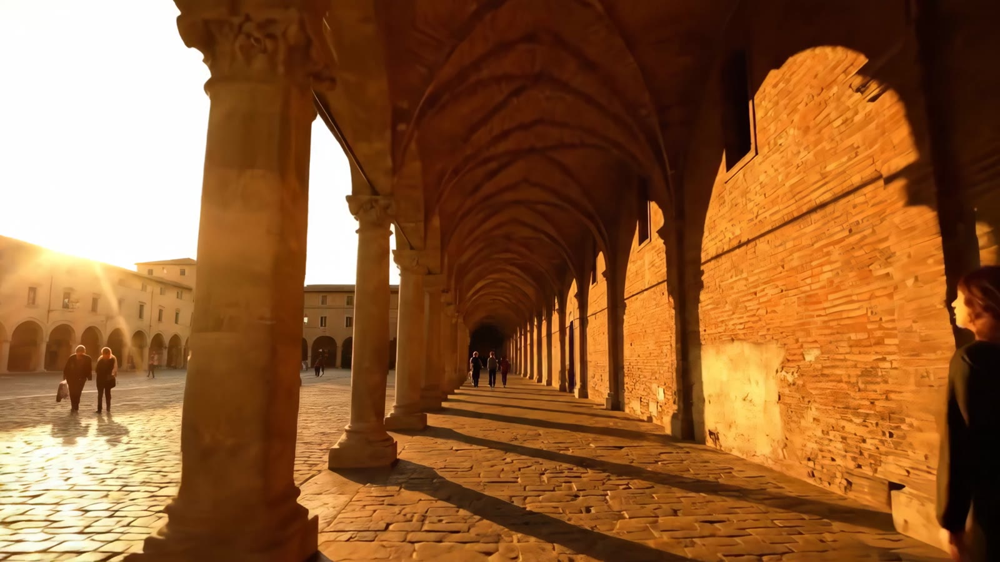

First words in Rome
Greet people, say who you are and ask how someone is, using the verb to be and the subject pronouns. You learn the sounds of Italian and how Italians actually say hello.
Club Italia by eTeacher Group
Live Italian classes on Zoom for adults. Native teachers in seven Italian cities, 10 to 12 learners per class, four levels from your first words to B1.
 Excellent
ExcellentYour advisor will email your Zoom link and course materials within one working day.
🔒 Secure CheckoutFully refundable within 7 days of your first live lesson.
Every course is built around the moments you will live in Italy. Ordering dinner, buying a ticket, a first date, a wine tasting, a taxi, the market. You practise each one live, out loud, until it feels natural.
Per me gli spaghetti alle vongole, grazie.The clams spaghetti for me, thank you.
Un biglietto per Roma, per favore.One ticket to Rome, please.
Alla nostra serata!To our evening!
Che profumo, è un Chianti?What an aroma, is it a Chianti?
Al Duomo, per favore.To the Duomo, please.
Mezzo chilo di limoni, grazie.Half a kilo of lemons, thank you.
Seven live courses in two collections: four structured levels and three spoken levels. Small groups, native teachers, CEFR-certified.
Language and culture, city by city. Twenty live lessons per level, from your first word to A2.2.
 A0 to A1.1
A0 to A1.1
Your first Italian, taught in Rome, the city where the language began.
 A1.1 to A1.2
A1.1 to A1.2
Everyday Italian from Florence, the city where the language was standardised.

A1.2 to A2.1Confident daily Italian from Bologna, home of Italy's oldest university.
 A2.1 to A2.2
A2.1 to A2.2
Real Italian for real life, between the warmth of Naples and the sharpness of Milan.
Spoken fluency, fast. Ten live lessons per level, no grammar drills.
 Spoken A0 to A1.1
Spoken A0 to A1.1
Ten live conversation sessions: greet, order, ask and chat from day one.
 Spoken A1.1 to A1.2
Spoken A1.1 to A1.2
Ten live sessions on the situations of daily life: work, travel, bookings.
 Spoken A1.2 to A2.1
Spoken A1.2 to A2.1
Ten live sessions of free conversation: opinions, memories and plans.
A small group of adults, one native teacher, live on camera together.
Broadcast from the teacher's own city.
Ten to twelve learners.
Pairs and trios, every lesson.
Every class, in your library.


 Marco, Rome (host)
Marco, Rome (host) Sarah
Sarah David
David Elena
Elena Michael
Michael Anna
Anna Jonathan
JonathanFour levels of twenty units. Choose a level, pick a module, and read exactly what you will be able to say after each live lesson.
Module 1, Arriving in Rome. Your first sounds of Italian, greetings and introductions, family words, and your first espresso ordered at the bar.
Greet people, say who you are and ask how someone is, using the verb to be and the subject pronouns. You learn the sounds of Italian and how Italians actually say hello.
Say where you are from, give your nationality and ask the same of others, with the verb to have and the definite articles. Practised as a first conversation at a Roman café.
Describe your family and say who belongs to whom, using possessives and plural nouns. You talk through real family photos, the way Italians do at the table.
Order a coffee and a pastry, ask what there is and pay, with regular verbs in the present tense. You learn the unwritten rules of the Italian espresso bar.
Module 2, Finding your way. Directions, time and days, food and prices in a trattoria, and how to say what you like.
Ask for and follow directions, say where places are and where you are going, with the verbs to go and to come. Set among the streets and hills of Rome.
Tell the time, name the days and months and describe your day, with the verb to do. You compare your routine with a typical Roman day.
Read a menu, order a full meal and ask the price, using words for quantities. You discover the dishes of Roman cooking and how a meal is ordered.
Say what you like and dislike, give a simple opinion and compare two things. Practised on Italian films and music.
Module 3, Everyday life. Weather and seasons, the home, clothes and colours, and polite requests at the market.
Talk about the weather and the seasons and say what you must, can and want to do. You plan a weekend outside the city.
Name the rooms and furniture, describe where you live and say how you are. You tour a typical Roman apartment.
Describe clothes, colours and sizes with adjectives that agree, and say what you know. Practised as shopping on Via del Corso.
Buy fruit, vegetables and cheese, ask for quantities and make polite requests. Set at the Campo de' Fiori market.
Module 4, Work and travel. Jobs and the office, trains and hotels, a halfway review, then your first steps into the past.
Say what you do, describe a working day and handle a simple phone call or note. You learn how Italians introduce their profession.
Buy a ticket, check a timetable, book a room and talk about what you are going to do. Set at Termini station.
Bring together everything from the first fourteen units in a short test and a spoken presentation. Your teacher gives you personal feedback on your progress.
Say what you did yesterday using the past tense with to have. You tell the story of a day in Rome.
Module 5, Telling your story. A Roman weekend in the past tense, daily routines, plans, and your A1.1 assessment.
Use the past tense with to be for movement and change, with the right endings. You recount what happened last Sunday.
Describe a place and your daily routine using reflexive verbs. Set in Trastevere on a Saturday.
Make weekend plans and start describing how things used to be, alongside what happened. You tell the story of a day in the country.
Hold a full conversation covering the whole level and complete your A1.1 spoken assessment. You leave with your certificate and a clear next step.
Module 1, The language of Florence. Why Italian is Tuscan, then the two past tenses for telling what happened and describing how things were.
Understand why modern Italian comes from Tuscany and meet Dante, Petrarch and Boccaccio. You refresh everything from Level 1 in conversation.
Tell what happened last summer with confidence, using time expressions like yesterday and last week. You strengthen the main past tense.
Describe how things used to be and what you used to do, and choose between the two past tenses. You talk about your childhood.
Describe how someone looks and what they are like, with adjectives that agree correctly. You introduce friends and family in detail.
Module 2, People, homes and food. Describing people and homes, Tuscan cooking, and a full restaurant conversation from order to bill.
Say what is in each room and where things are. You give a guided tour of a Florentine apartment.
Talk about ingredients, quantities and how a dish is made. You learn the words behind ribollita, bistecca and cantucci.
Handle a whole restaurant visit: booking, ordering, raising a problem politely and asking for the bill. You learn how tipping works in Italy.
Ask for weights, packets and containers and compare prices. Set at the Mercato Centrale in Florence.
Module 3, Getting things done. The market, the phone, appointments and the pharmacy, in the polite register Italians expect.
Make and take a phone call, speak formally and leave a clear message. You learn the phrases Italians use on the phone.
Book a doctor, a hairdresser or an office visit and deal with formal Italian. You practise the polite register of Italian bureaucracy.
Name parts of the body, describe how you feel and ask a pharmacist for help. You learn how the Italian pharmacy works.
Describe your morning and your day with reflexive verbs and say how often you do things. You compare routines with the class.
Module 4, Life and culture. Routines, hobbies and football, Italian cinema and opinions, and your midpoint review.
Talk about hobbies, sport and what you do at the weekend. You discover Italy's passion for football and the Sunday papers.
Talk about films, describe what you saw and give your opinion. You discover Fellini and Sorrentino.
Review the first half of the level with a spoken test and a quiz on Florence. Your teacher gives you personal feedback.
Talk about plans, promises and predictions using the future tense. You describe the year ahead.
Module 5, Plans and polite Italian. The future, first hypotheticals, the conditional for requests, emails, and your A1.2 assessment.
Say what happens or would happen if something else does. You start building longer, connected sentences.
Ask for things politely and say what you would like or could do. You sound courteous in shops, hotels and offices.
Write a clear email, choosing between formal and informal style, with the right greetings and endings. You reply to a real message.
Complete your A1.2 assessment and present a piece of Italian culture to the class. You leave with your certificate and the path to Level 3.
Module 1, Telling stories. Bologna and its university, recognising literary past tenses, and building a story in the right order.
Discover Italy's oldest university, its arcades and its food while refreshing Level 2. You describe a city in detail.
Recognise the literary past tense when you read fairy tales and news stories. You understand it without needing to use it.
Explain what had already happened before another event. You give your stories a clear order.
Combine the two main past tenses to set a scene and move the action forward. You tell real stories from a Bolognese childhood.
Module 2, The Italian table. The food of Bologna, dinner-party conversation, giving opinions, and comparing Italian cities.
Talk about ragù, tortellini and Parmigiano and explain how a dish is cooked. You learn the vocabulary of the Italian kitchen.
Take part in a lively dinner conversation: cut in politely, agree, disagree and offer more wine. You practise the rhythm of real group talk.
Say what you think and believe and defend your view. You meet the subjunctive for the first time, gently.
Compare cities and neighbourhoods using more, less and as much as. You weigh Bologna against Milan and Rome.
Module 3, Culture and conversation. Booking and describing films, Italian songwriters, the midpoint review, and talking about what could be.
Book tickets, talk about film types, tell a plot and recommend a film. You plan an evening out with the class.
Listen to Lucio Dalla, Battisti, De André and today's artists. You train your ear and talk about what the songs say.
Complete a spoken assessment and give a short cultural presentation. Your teacher gives you personal feedback.
Talk about imagined situations and what you would do in them. You handle the full hypothetical sentence.
Module 4, Real-life Italy. North, centre and south, work and job interviews, healthcare, and banking and paying bills.
Describe Italian cities and regions and explain the differences between north, centre and south. You plan a route through the country.
Talk about jobs and contracts, describe your experience and handle a job interview. You learn how an Italian CV works.
Explain a problem to a doctor, understand advice and find your way through the public health system. You practise a visit from start to finish.
Open an account, pay bills and order online. You handle the everyday Italian of money.
Module 5, Living like a local. Renting a home, Italian holidays and festivals, the dialects, and your A2.1 assessment.
Search for an apartment, understand a rental contract and negotiate with a landlord. You practise a real viewing.
Talk about Christmas, Easter, Ferragosto, the Palio of Siena and the Venice Carnival. You explain a tradition of your own in Italian.
Hear how Bolognese, Roman, Neapolitan and Sicilian differ from standard Italian. You understand dialects as part of Italy's heritage.
Complete your A2.1 assessment with a spoken presentation. You leave with your certificate and the path to Level 4.
Module 1, Advanced grammar. North and south in Italian identity, the full subjunctive, hypotheticals and reported speech.
Explore the north and south of Italian identity through Naples and Milan while refreshing Level 3. You discuss what unites and divides the country.
Use the subjunctive after expressions of opinion, doubt and feeling. You sound natural when you say what you think or hope.
Talk about wishes and unreal situations in the past and build complete hypothetical sentences. You tell what you would have done.
Report what someone said or asked, changing tenses correctly. You retell a conversation accurately.
Module 2, Press, film and opera. Reading Italian newspapers, analysing great Italian films, a Verdi libretto, and business meetings.
Read articles from Corriere della Sera and la Repubblica and understand newspaper style. You discuss the week's news.
Analyse La Grande Bellezza, La Vita è Bella and Il Postino. You discuss characters, themes and scenes in detail.
Follow the text of a Verdi opera and understand what is being sung. You listen closely to great arias.
Take part in a meeting, present an idea, negotiate and close an agreement. You use the formal register of Italian business.
Module 3, Debate and persuasion. Civic Italian, the midpoint assessment, structured debate, and the language of advertising.
Understand Italy's institutions, parties and elections. You follow and discuss public debate.
Complete a full spoken, written and listening assessment. Your teacher gives you a detailed progress report.
Debate in Italian: make your points in order, support them and answer the other side. You argue a case in front of the class.
Understand how Italian advertising and sales language works and use it yourself. You write and deliver a short pitch.
Module 4, Regional Italy. Neapolitan expressions, Milanese business Italian, modern Italian authors, and twenty regional cuisines.
Learn Neapolitan expressions that entered everyday Italian. You discover Neapolitan cinema.
Use the register of Milanese working life, aperitivo conversation and fashion vocabulary. You practise networking in Italian.
Read and discuss passages by Ferrante, Calvino and Baricco. You talk about style and meaning.
Tour the cooking of Italy's twenty regions. You describe dishes, origins and traditions with precision.
Module 5, Moving to Italy. Education and academia, practical life in Italy, citizenship applications, and your A2.2 assessment.
Understand the Italian education system and use the language of study. You describe your own education in Italian.
Handle the practical language of moving to Italy: tax code, residence permit and healthcare. You practise real office visits.
Understand the language of citizenship by descent, applications and consulates. You follow a real process step by step.
Complete your A2.2 assessment and present your Italian journey to the class. You leave with your certificate and the path to B1.
Six named milestones, one clear arc of progress. You are placed by a spoken conversation, never a form.
Swipe the five steps →
Action-oriented, communicative learning aligned with the Common European Framework of Reference. You do not study Italian. You act in it.
The CEFR treats the learner as a social agent. Every lesson is a task: ordering, booking, negotiating, persuading.
Every unit is set in a real Italian place: a Roman bar, a Florentine workshop, a Bolognese market.
Art, food, opera and cinema are the material the language is taught through, assessed with can-do statements at every milestone.
Club Italia is independent and not affiliated with, nor endorsed by, the institutions cited.
Each teacher lives and broadcasts from a different Italian city. DITALS qualified. Real accents, real kitchens, real streets.
Seven cities, seven native teachers. Hover or tap a city to meet its teacher, open its course and see the first units of the syllabus.
Three questions, an instant recommendation. Your teacher confirms it in a free placement conversation.
Excellent on TrustpilotMarco is a great teacher. Small class, everyone speaks, and you actually leave every lesson able to say something new.
Sarah T.Verified learnerIn three months I ordered dinner in Trastevere and the waiter answered in Italian for the whole meal.
 Diane WellerChicago, Level 1, Beginner
Diane WellerChicago, Level 1, BeginnerChiara teaches from a Florentine studio. You hear the city. The accent training is unreal.
Elena R.Verified learnerThe teacher cooks while she teaches. That single fact changed how I hear the language.
 Robert HensleyAustin, Speak Italian, Beginner
Robert HensleyAustin, Speak Italian, BeginnerTwelve people in class, all adults, all serious. Best language school I have used, and I have tried a few.
David L.Verified learnerI read the libretto of La Bohème with Alessandro over six sessions. I now understand why Italians cry at the third act.
 Sarah KimSan Francisco, Culture: Opera
Sarah KimSan Francisco, Culture: OperaSmall classes, real corrections, no drills. It felt like being tutored at a Florentine institute.
 James WhitakerLondon, Level 2, Elementary
James WhitakerLondon, Level 2, ElementaryChiara caught a mistake I had been making since 2014. In one live class.
 Linda BauerToronto, Level 3, Pre-intermediate
Linda BauerToronto, Level 3, Pre-intermediateMarco is a great teacher. Small class, everyone speaks, and you actually leave every lesson able to say something new.
Sarah T.Verified learnerIn three months I ordered dinner in Trastevere and the waiter answered in Italian for the whole meal.
Diane WellerChicago, Level 1, BeginnerChiara teaches from a Florentine studio. You hear the city. The accent training is unreal.
Elena R.Verified learnerThe teacher cooks while she teaches. That single fact changed how I hear the language.
Robert HensleyAustin, Speak Italian, BeginnerTwelve people in class, all adults, all serious. Best language school I have used, and I have tried a few.
David L.Verified learnerI read the libretto of La Bohème with Alessandro over six sessions. I now understand why Italians cry at the third act.
Sarah KimSan Francisco, Culture: OperaSmall classes, real corrections, no drills. It felt like being tutored at a Florentine institute.
James WhitakerLondon, Level 2, ElementaryChiara caught a mistake I had been making since 2014. In one live class.
Linda BauerToronto, Level 3, Pre-intermediateTell us about your Italian and your goals. An advisor will walk you through the courses, the live classes and the plan that fits you.
Every class is live, taught by a native teacher broadcasting from Italy. Recordings are for revision, never a substitute.
Ten to twelve adults. Everyone speaks in every lesson and the teacher corrects each learner personally.
Twenty live lessons, one a week over 20 weeks, the PDF syllabus, recordings, Biagio the AI tutor and a CEFR-mapped Club Italia certificate.
Yes, from A2 upward. You sit the exam at an authorised centre of the Università per Stranieri di Siena (CILS) or di Perugia (CELI). Club Italia is not an exam centre.
From $62 a week on the annual plan, $73 a week by term, $84 a week monthly. Seven day full refund from your first live lesson.
Native Italian teachers holding the DITALS qualification for teaching Italian as a foreign language, each in their own city.